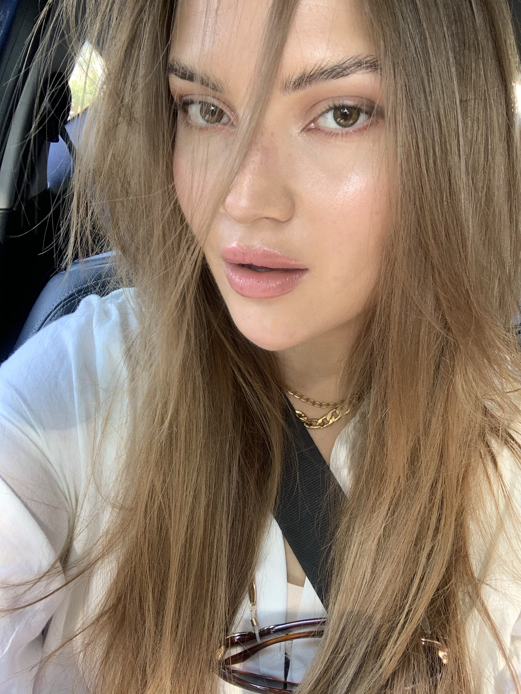

Теа Димитровска

Добредојдовте на мојата веб страна! Јас сум Теа Димитровска и имам 21 година. Уште од рана возраст ме возхитување терминот Интернет, па така следејќи ги моите инстинкти дојдов до четврта година на ФЕИТ. Пријателите ме опишуваат како опуштена, позитивна и отворена личност која е секогаш заинтересирана за откривање и учење нови области. Имам куче старо една година кој е мојот најверен другар и мојот сон е секое бездомно животинче да има свој дом. Покрај технологијата и животните, уште една сфера која ме интересира е модата. Со задоволство цртам, обожавам дизајн и естетика. Секогаш знам да одвојам време за себе и го посветувам на вежбање, јога, планинарење, возење точак и се разбира во зима скијање. Викендот е мојот омилен дел од неделата и најчесто го поминувам излезена со пријатели или на некое мини патување. Повеќе за мене и моите хобија може да дознаете на оваа веб страна, како и да доловите моменти од мојот живот во мојата фото галерија. Се надевам ќе уживате!
Насока: Телекомуникации и информациско инженерство
2017-Сегашност